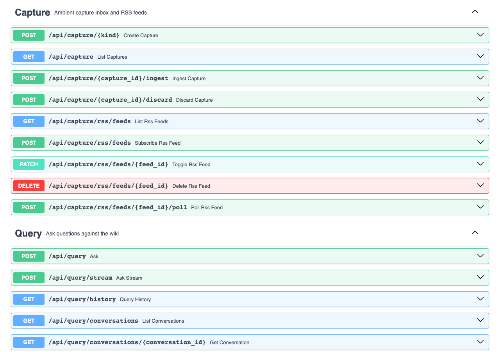
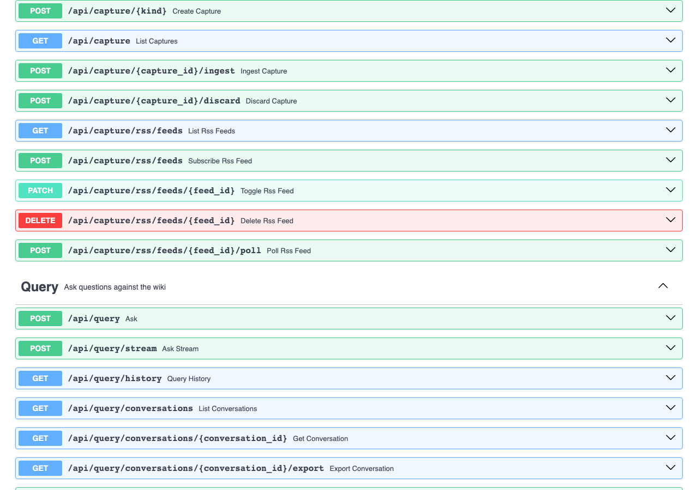
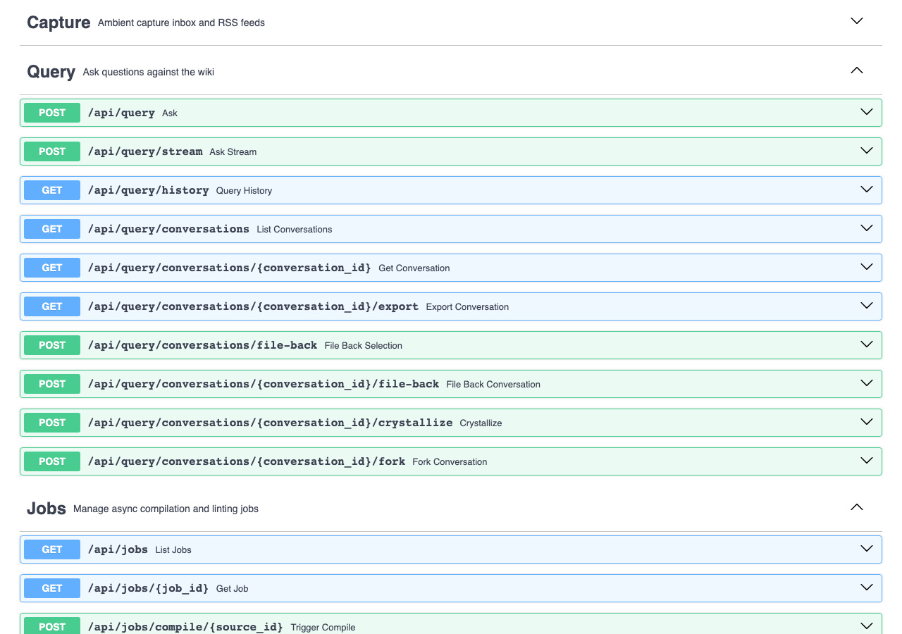
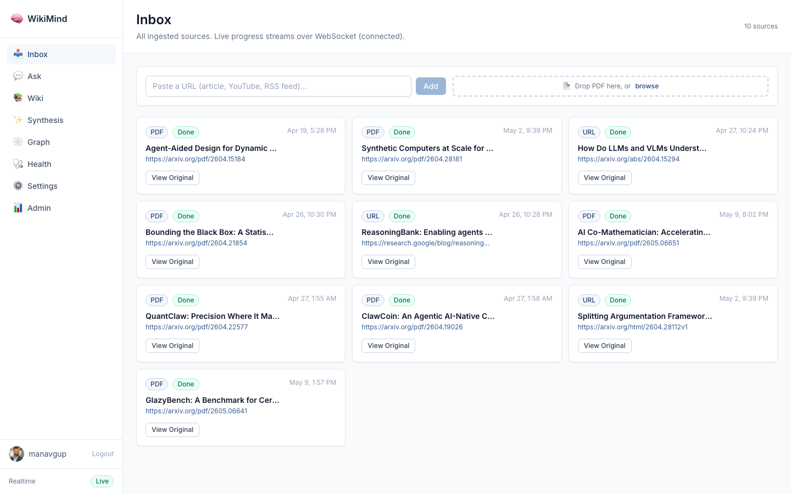

PASS Feature Real evidence: clipboard capture, RSS subscription, feed polling, inbox listing
/api/capture/{kind}) for clipboard/share-target input,
RSS feed subscription and polling with dedup-by-guid, and capture listing with filter support.
All responses below are real, captured from a live WikiMind instance on 2026-05-09.
$ curl -s -X POST http://127.0.0.1:7842/api/capture/clipboard \ -H "Authorization: Bearer $TOKEN" \ -H "Content-Type: application/json" \ -d '{"content":"Test clipboard note about machine learning", "title":"Quick ML Note"}' { "id": "c10ed44c-8409-4c2e-889d-d2f4ccb1fd33", "kind": "clipboard", "title": "Quick ML Note", "source_url": null, "status": "captured", "external_id": null, "received_at": "2026-05-09T17:02:56.320776", "triaged_at": null, "ingested_at": null, "discarded_at": null, "discard_reason": null, "source_id": null }
$ curl -s -X POST http://127.0.0.1:7842/api/capture/rss/feeds \ -H "Authorization: Bearer $TOKEN" \ -H "Content-Type: application/json" \ -d '{"feed_url":"https://hnrss.org/newest?count=3"}' { "id": "9f450081-b226-4651-8ddb-a138a350d63f", "feed_url": "https://hnrss.org/newest?count=3", "title": null, "enabled": true, "last_polled_at": null, "error_message": null, "created_at": "2026-05-09T16:43:38.811192" }
$ curl -s -X POST http://127.0.0.1:7842/api/capture/rss/feeds/9f450081-b226-4651-8ddb-a138a350d63f/poll \ -H "Authorization: Bearer $TOKEN" { "feed_id": "9f450081-b226-4651-8ddb-a138a350d63f", "new_captures": 3, "status": "polled" }
$ curl -s http://127.0.0.1:7842/api/capture -H "Authorization: Bearer $TOKEN" { "items": [ { "id": "56aaa9bb-c222-47cd-8efa-274be7f2cdc1", "kind": "rss", "title": "Will We Ever Be Able to Forecast Volcanic Eruptions Like Weather?", "source_url": "https://www.quantamagazine.org/will-we-ever-be-able-to-forecast-volcanic-eruptions-like-weather-20260508/", "status": "captured", "external_id": "https://news.ycombinator.com/item?id=48076364", "received_at": "2026-05-09T17:03:13.514094" }, { "id": "910ae2dd-538d-4f61-880f-82866fcb5418", "kind": "rss", "title": "I'm 16 and I built FutuRole to fight the \"humiliation ritual\" of job hunting", "source_url": "https://futurole.com", "status": "captured", "external_id": "https://news.ycombinator.com/item?id=48076399", "received_at": "2026-05-09T17:03:13.513482" }, { "id": "c078ed5b-a7d6-4ba0-8a91-c8d07d156fc9", "kind": "rss", "title": "The Sights of the Venice Biennale", "source_url": "https://www.nytimes.com/2026/05/05/arts/venice-biennale-photos-video.html", "status": "captured", "external_id": "https://news.ycombinator.com/item?id=48076419", "received_at": "2026-05-09T17:03:13.511346" }, { "id": "c10ed44c-8409-4c2e-889d-d2f4ccb1fd33", "kind": "clipboard", "title": "Quick ML Note", "source_url": null, "status": "captured", "received_at": "2026-05-09T17:02:56.320776" }, ... 2 more clipboard captures ... ], "total": 6 }
$ curl -s http://127.0.0.1:7842/api/capture/rss/feeds -H "Authorization: Bearer $TOKEN" { "feeds": [ { "id": "9f450081-b226-4651-8ddb-a138a350d63f", "feed_url": "https://hnrss.org/newest?count=3", "title": null, "enabled": true, "last_polled_at": "2026-05-09T17:03:13.514140", "error_message": null, "created_at": "2026-05-09T16:43:38.811192" }, { "id": "e7b6d575-891d-413e-a840-516987ae49bb", "feed_url": "https://feeds.arstechnica.com/arstechnica/technology-lab", "title": "Ars Technica", "enabled": true, "last_polled_at": null, "error_message": null, "created_at": "2026-05-09T13:48:09.068224" } ] }




Captured via authenticated Playwright from wikimind.fly.dev